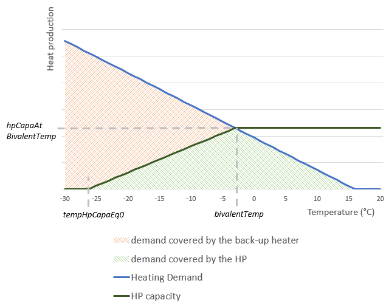

API documentation¶
-
addCo2Production(asset, state, energyDelivery='PRODUCTION' , co2Delivery='CO2' , fuelPickup='FUEL_CONSUMPTION' , co2Content='_co2Content' , co2ContentRunningBound='_co2ContentRunningBound' , fuelCo2Content='_fuelCo2Content' )¶ Add CO2 production to an asset
Parameters: - asset (Asset) – asset to configure
- state (AssetState) – state to configure
- energyDelivery (string) – name of the energy delivery parameter
- co2Delivery (string) – name of the CO2 energy
- fuelPickup (string) – name of the fuel pickup
- co2Content (string or DataWrapper) – dataname of the yield between the electricity and the CO2 production
- co2ContentRunningBound (string or DataWrapper) – dataname of the additional yield between the running bound and the CO2 production when using the cluster model
- fuelCo2Content (string or DataWrapper) – dataname of the yield between the fuel consumption and the CO2 production
Returns: None
FUEL BEHAVIOR
If the behavior FUEL is active, fuelCo2Content is used to define the yield between the fuel consumption and the CO2 emissions.
\(\small co2emissions = \boldsymbol{fuelCo2Content} * fuelConsumption\)WITHOUT FUEL BEHAVIOR
If the behavior FUEL is not active:
- if the behavior CLUSTER is not active:
co2Content is used to define the yield between the energyDelivery production and the CO2 emissions.
\(\small co2emissions = \boldsymbol{co2Content} * energyDelivery\)
- if the behavior CLUSTER is active:
CO2 emissions are the sum of the co2Content of the energyDelivery production and the co2ContentRunningBound of the running capacity.
\(\small co2emissions = \boldsymbol{co2Content} * energyDelivery + \boldsymbol{co2ContentRunningBound} * runningCapacity\)
-
addDSRReserveProduction(asset, state, pmax='_pmax' )¶ Add DSR (Demand Side Response) asset reserve production constraints
Parameters: - asset (Asset) – asset to configure
- state (AssetState) – state to configure
- pmax (string or DataWrapper) – dataname of the Pmax of the asset in simulation mode
Returns: None
NOTATIONS Two reserve lists activeReserveList and nonActiveReserveList are build according to the active behaviors of the asset.
Each reserve of the activeReserveList and the nonActiveReserveList has the following parameters:
- reserve.energy : name of the reserve energy (ex : syncResUp). The variable associated to the procurement of the reserve reserve.energy for this asset is also named reserve.energy.
- reserve.isUp : boolean that sets the reserve direction. True if it is an upward reserve, False otherwise
- reserve.cost : reserve production cost (defined by parameter “_mfrrProcurementCost” or “_syncReserveProcurementCost” according to the considered reserve)
Warning
Each reserve defined in the asset model needs to be included either in the activeReserveList or the nonActiveReserveList.
CONSTRAINTS for nonActiveReserveList
For each reserve in the nonActiveReserveList, the reserve procurement is set to 0.
\(\small reserve.energy = 0\)CONSTRAINTS for activeReserveList
Reserve production costsFor each reserve a production cost is associated to the reserve production:
\(\small objectiveFunction += reserve.energy * \boldsymbol{reserve.cost}\)Upper reserve procurement boundsThe total procurement of all the reserve in the same direction cannot exceed the installed capacity of the DSR asset.
\(\small \sum_{res \, | \, \{res.isUp = True\}}^{reserveList}{res.energy} \leq \boldsymbol{pmax}\)
\(\small \sum_{res \, | \, \{res.isUp = False\}}^{reserveList}{res.energy} \leq \boldsymbol{pmax}\)
-
addDischargeStock(asset, state, energyDelivery='PRODUCTION' , energyPickup='CONSUMPTION' , initialStorageLevel=0 , minStorageLevel=None , inputEfficiency=1.0 , outputEfficiency=1.0 , storageCapacity='_storageCapacity' , maxStorageCapacity='_maxStorageCapacity' , minStorageCapacity='_minStorageCapacity' , storageCapex='_storageCapex' , pmax='_pmax' , pmaxmax='_pmaxmax' , pmaxmin='_pmaxmin' , dischargeTime='_dischargeTime' , dischargeTimemax='_maxDischargeTime' , dischargeTimemin='_minDischargeTime' , storageAvailability=1.0 , storageLossRate='_lossRate' , storageCost='_storageCost' , boundedSupply='_boundedSupply' , prorataSupply='_prorataSupply' , prorataSupplyCoef='_prorataSupplyCoef' , fixedSupply='_fixedSupply' , fixedDemand='_fixedDemand' , reserveList='DefaultReserveList' , addToModel=True )¶ Add a stock module to the asset, whose storage capacity can be implicitly defined with a dischargeTime parameter.
Parameters: - asset (Asset) – asset to configure
- state (AssetState) – state to configure
- energyDelivery (string) – name of the energy delivery parameter
- energyPickup (string) – name of the energy pickup parameter
- initialStorageLevel (string or DataWrapper (or "None")) – dataname of the initial stock level
- minStorageLevel (string or DataWrapper (or "None")) – dataname of the storage minimum level
- inputEfficiency (string or DataWrapper (or Crystal.getOne())) – dataname of the input efficiency
- outputEfficiency (string or DataWrapper (or Crystal.getOne())) – dataname of the output efficiency
- storageCapacity (string or DataWrapper) – dataname of the storage capacity
- maxStorageCapacity (string or DataWrapper) – dataname of the maximum storage capacity
- minStorageCapacity (string or DataWrapper) – dataname of the minimum storage capacity
- storageCapex (string or DataWrapper) – dataname of the investment cost for the stock capacity optimization
- pmax (string or DataWrapper) – dataname of the Pmax of the asset in simulation mode
- pmaxmax (string or DataWrapper) – dataname of the maximal Pmax of the asset in capacity optimization mode
- pmaxmin (string or DataWrapper) – dataname of the minimal Pmax of the asset in capacity optimization mode
- dischargeTime (string or DataWrapper) – discharge time
- dischargeTimemax (string or DataWrapper) – maximal discharge time
- dischargeTimemin (string or DataWrapper) – minimal discharge time
- storageAvailability (string or DataWrapper (or "None")) – dataname of the storage availability of the asset
- storageLossRate (string or DataWrapper) – dataname of the loss rate applied on the asset storage
- storageCost (string or DataWrapper) – dataname of the cost of storage
- boundedSupply (string or DataWrapper) – dataname of the bounded supply to add to the asset storage
- fixedSupply (string or DataWrapper (or "None")) – dataname of the fixed supply to add to the asset storage
- fixedDemand (string or DataWrapper (or "None")) – dataname of the fixed demand to add to the asset storage
- reserveList (List of Reserve object) – list of reserve procured by the asset
- addToModel (boolean) – boolean that adds the storage module to the model if true. WARNING : the user MUST add the moduleStock to the model himself if false
Returns: StockModule, in case the user wants to add user constraints in the asset xml
The function redefines some of the stockModule parameters if the behavior DISCHARGE_TIMES is active, before calling
addStock:\(\small storageCapacity = pmax * dischargeTime\)
-
addEnergyConsumption(asset, state, energyPickup='CONSUMPTION' , energyDelivery='PRODUCTION' , availability='_availability' , pmax='_pmax' , pmaxIn='_pmaxIn' , consumptionCost='_consumptionCost' , pmaxInOutRatio=1 , pmaxmax='_pmaxmax' , pmaxmin='_pmaxmin' , capex='_capex' , foc='_foc' )¶ Add an energy consumption
Parameters: - asset (Asset) – asset to configure
- state (AssetState) – state to configure
- energyPickup (string) – name of the energy pickup parameter
- energyDelivery (string) – name of the energy delivery parameter
- availability (string or DataWrapper) – dataname of the availability of the asset
- pmax (string or DataWrapper) – dataname of the Pmax of the asset in simulation mode
- pmaxIn (string or DataWrapper) – dataname of the PmaxIn of the asset in simulation mode (used if BH_USE_PMAX_IN is active)
- consumptionCost (string or DataWrapper (or "None")) – dataname of the consumption cost of the asset
- pmaxInOutRatio (string or DataWrapper (or "None")) – dataname of the ratio pmaxIn/pmaxOut in case of capacity optimization. If is None, pmaxIn is optimized independently
- pmaxmax (string or DataWrapper) – dataname of the maximal Pmax of the asset in capacity optimization mode
- pmaxmin (string or DataWrapper) – dataname of the minimal Pmax of the asset in capacity optimization mode
- capex (string or DataWrapper) – dataname of the investment cost for the capacity optimization
- foc (string or DataWrapper) – dataname of the fixed operating costs
Returns: None
COMMON CONSTRAINTS
Consumption costIf the consumptionCost parameter is not None, a cost is added to the objective function, proportional to the consumption
\(\small objectiveFunction += energyPickup * \boldsymbol{consumptionCost}\)Upper consumption boundThe energy consumption is bounded by the availability multiplied by the maximum power.
\(\small energyPickup \leq \boldsymbol{availability} * \boldsymbol{pmax}\) [1]CAPACITY OPTIMIZATION (behavior OPTIM_PMAX is active)
Consumption capacityIf behavior OPTIM_PMAX is active, the consumption upper bound becomes a variable (optimPmaxIn):
\(\small energyPickup \leq \boldsymbol{availability} * \boldsymbol{optimPmaxIn}\)If pmaxInOutRatio is not None, the consumption upper bound is optimized proportionally to the optimized pmax associated with the energyDelivery parameter, whose constraints should be set separately.
\(\small \boldsymbol{optimPmaxIn} = pmaxInOutRatio * \boldsymbol{optimizedPmax}\)
If pmaxInOutRatio is None, optimPmaxIn is optimized as an independent variable, which is bounded below and above as follow.
\(\small \boldsymbol{pmaxmin} \leq optimPmaxIn \leq \boldsymbol{pmaxmax}\)Investment costThe cost to increase the variable optimPmaxIn depends on the annualized capex and the foc for the given technology.
\(\small objectiveFunction += optimPmaxIn * ( \boldsymbol{capex} + \boldsymbol{foc} )\)[1] If behavior USE_PMAX_IN is active, the parameter pmaxIn is used instead of the pmax parameter. This behavior enables to have different upper bounds for production and consumption.
-
addEnergyProduction(asset, state, energyDelivery='PRODUCTION' , productionCost='_productionCost' , variableCost='_variableCost' , minLoad='_minLoad' , runningCapacityMinLoad='_runningCapacityMinLoad' , availability='_availability' , pmax='_pmax' , pmaxmax='_pmaxmax' , pmaxmin='_pmaxmin' , capex='_capex' , foc='_foc' , minOffTime='_minOffTime' , clusterStartingCost='_clusterStartingCost' , runningCost='_runningCost' )¶ Add energy production using either a fleet or a cluster model, and with or without capacity optimization, according to the active behaviors
Parameters: - asset (Asset) – asset to configure
- state (AssetState) – state to configure
- energyDelivery (string) – name of the energy delivery parameter
- productionCost (string or DataWrapper (or "None")) – dataname of the production cost of the asset when BH_FUEL is inactive
- variableCost (string or DataWrapper (or "None")) – dataname of the production cost of the asset when BH_FUEL is active
- minLoad (string or DataWrapper (or "None")) – dataname of the minimal usage. Can be “None” if there isn’t one
- runningCapacityMinLoad (string or DataWrapper) – min stable production level as a % of running capacity
- availability (string or DataWrapper) – dataname of the availability of the asset
- pmax (string or DataWrapper) – dataname of the Pmax of the asset in simulation mode
- pmaxmax (string or DataWrapper) – dataname of the maximal Pmax of the asset in capacity optimization mode
- pmaxmin (string or DataWrapper) – dataname of the minimal Pmax of the asset in capacity optimization mode
- capex (string or DataWrapper) – dataname of the investment cost for the capacity optimization
- foc (string or DataWrapper) – dataname of the fixed operating costs
- minOffTime (string or DataWrapper) – minimum off-state duration (in hours)
- clusterStartingCost (string or DataWrapper) – starting costs for the cluster model
- runningCost (string or DataWrapper) – costs on running capacity for the cluster model
Returns: None
COMMON CONSTRAINTS
Variable and production costsIf the asset is consuming fuel (behavior FUEL is active), a variable cost which does not include the cost for fuel is associated to the energy production:
\(\small objectiveFunction += energyDelivery * \boldsymbol{variableCost}\)If the asset is not consuming fuel (behavior FUEL is inactive), the production cost which includes the cost for fuel is associated to the energy production:
\(\small objectiveFunction += energyDelivery * \boldsymbol{productionCost}\)FLEET CONSTRAINTS (behavior CLUSTER is inactive)
Lower and upper production boundsIf the asset is a must run fleet (behavior MUST_RUN is active), the energy production is equal to the installed capacity multiplied by the availability:
\(\small energyDelivery = \boldsymbol{pmax} * \boldsymbol{availability}\)If the asset is not a must run fleet (behavior MUST_RUN is inactive), the energy production is bounded below and above as follow:
\(\small \boldsymbol{pmax} * \boldsymbol{availability} * \boldsymbol{minLoad} \leq energyDelivery \leq \boldsymbol{pmax} * \boldsymbol{availability}\)CLUSTER CONSTRAINTS (behavior CLUSTER is active)
Running capacityIn cluster mode, a key element is the running capacity (noted runningCapacity). This variable represents the capacity that is running (and can be used instantaneously for production). The actual energy production is bounded below and above by bounds that depend on the running capacity
\(\small runningCapacity * \boldsymbol{runningCapacityMinLoad} \leq energyDelivery \leq runningCapacity\)Running and starting costsA running cost is associated to maintaining a certain running capacity. Increasing the running capacity also comes with a cost.
\(\small objectiveFunction += runningCapacity * \boldsymbol{runningCost}\) \(\small objectiveFunction_{(t)} += \max{(runningCapacity_{(t)} - runningCapacity_{(t-1)}},\,0) * \boldsymbol{clusterStartingCost}\)Lower and upper bounds on the running capacityThe running capacity is bounded below and above as follow:
\(\small 0 \leq runningCapacity \leq \boldsymbol{pmax} * \boldsymbol{availability}\)Minimum off-state durationWhen a part of the running capacity is switched off, this part cannot be switched on before a duration equals to minOffTime. Modelling details can be found here.
CAPACITY OPTIMIZATION (behavior OPTIM_PMAX is active)
Installed capacityWhen the installed capacity is optimized, pmax becomes a variable (optimPmax) which is bounded below and above as follow. The equations above involving pmax stay the same, aside from pmax which is replaced by the variable optimPmax
\(\small \boldsymbol{pmaxmin} \leq optimPmax \leq \boldsymbol{pmaxmax}\)Investment costThe cost to increase the variable optimPmax depends on the annualized capex and the foc for the given technology.
\(\small objectiveFunction += optimPmax * ( \boldsymbol{capex} + \boldsymbol{foc} )\)
-
addEnergyTransmission(asset, state, energyPickup='CONSUMPTION' , energyDelivery='PRODUCTION' , losses='_losses' , productionCost='_productionCost' , consumptionCost='_consumptionCost' , availability='_availability' , pmax='_pmax' , pmaxmax='_pmaxmax' , pmaxmin='_pmaxmin' , capex='_capex' , foc='_foc' )¶ Add energy transmission
Parameters: - asset (Asset) – asset to configure
- state (AssetState) – state to configure
- energyPickup (string) – name of the energy pickup parameter
- energyDelivery (string) – name of the energy delivery parameter
- losses (string or DataWrapper) – dataname of the losses between the energy pickup and the energy delivery of the asset
- productionCost (string or DataWrapper (or "None")) – dataname of the production cost of the asset
- consumptionCost (string or DataWrapper (or "None")) – dataname of the consumption cost of the asset
- availability (string or DataWrapper) – dataname of the availability of the asset
- pmax (string or DataWrapper) – dataname of the Pmax of the asset in simulation mode
- pmaxmax (string or DataWrapper) – dataname of the maximal Pmax of the asset in capacity optimization mode
- pmaxmin (string or DataWrapper) – dataname of the minimal Pmax of the asset in capacity optimization mode
- capex (string or DataWrapper) – dataname of the investment cost for the capacity optimization
- foc (string or DataWrapper) – dataname of the fixed operating costs
Returns: None
COMMON CONSTRAINTS
Consumption costIf the consumptionCost parameter is not None, a cost is added to the objective function, proportional to the consumption
\(\small objectiveFunction += energyPickup * \boldsymbol{consumptionCost}\)Production costIf the productionCost parameter is not None, a cost is added to the objective function, proportional to the production
\(\small objectiveFunction += energyDelivery * \boldsymbol{productionCost}\)Relation between the consumption and the productionTo represent potential losses, a fraction of the consumed energy is lost when the energy is going through the transmission, which results to a production lower than the consumption.
\(\small energyDelivery = (1 - \boldsymbol{losses}) * energyPickup\)Upper consumption boundThe energy consumption is bounded by the availability multiplied by the maximum power.
\(\small energyPickup \leq \boldsymbol{availability} * \boldsymbol{pmax}\)CAPACITY OPTIMIZATION (behavior OPTIM_PMAX is active)
Installed capacityWhen the installed capacity is optimized, pmax becomes a variable (optimPmax) which is bounded below and above as follow. The equations above involving pmax stay the same, aside from pmax which is replaced by the variable optimPmax
\(\small \boldsymbol{pmaxmin} \leq optimPmax \leq \boldsymbol{pmaxmax}\)Investment costThe cost to increase the variable optimPmax depends on the annualized capex and the foc for the given technology.
\(\small objectiveFunction += optimPmax * ( \boldsymbol{capex} + \boldsymbol{foc} )\)
-
addFuelConsumption(asset, state, fuelPickup='FUEL_CONSUMPTION' , energyDelivery='PRODUCTION' , fuelYieldOrEfficiency='_fuelYield' , productionHeatRate='_productionHeatRate' , runningCapaFuelConsumption='_runningCapaFuelConsumption' )¶ Add fuel consumption if FUEL behavior is active.
Parameters: - asset (Asset) – asset to configure
- state (AssetState) – state to configure
- fuelPickup (string) – name of the fuel energy pickup parameter
- energyDelivery (string) – name of the energy delivery parameter
- fuelYieldOrEfficiency (string or DataWrapper) – dataname of the fuel yield or the efficiency of the asset
- productionHeatRate (string or DataWrapper) – dataname of the production heat rate of the asset
- runningCapaFuelConsumption (string or DataWrapper) – dataname of the running capacity fuel consumption of the asset
Returns: None
Introduced variables:
- fuelConsumption : fuel consumption for the given asset
- runningCapacity: electricity generation capacity that is running (and can be used instantaneously for production)
NO FUEL CONSTRAINTS (behavior FUEL is inactive)
In this case, no fuel consumption is set for this asset.
FUEL CONSTRAINTS (behavior FUEL is active)
Fleet constraints- If the behavior CLUSTER is inactive, fuelYieldOrEfficiency is used to define the yield between the production and the fuel consumption.
\(\small energyDelivery = \boldsymbol{fuelYieldOrEfficiency} * fuelConsumption\)
Cluster constraints- If the behavior CLUSTER is active, the total fuel consumption is divided in two parts : the fuel used to keep the running capacity turned on, and the fuel necessary to effectively produce the output energy.
\(\small fuelConsumption = \boldsymbol{productionHeatRate} * energyDelivery\) \(\small ~~~~~~~~~~~~~~~~~~ + \boldsymbol{runningCapaFuelConsumption} * runningCapacity\)
-
addGradients(asset, state, energyDelivery='PRODUCTION' , availability='_availability' , pmax='_pmax' , gradientUp='_gradientUp' , gradientDown='_gradientDown' )¶ Add gradients to an asset production if behavior GRADIENTS is active
Parameters: - asset (Asset) – asset to configure
- state (AssetState) – state to configure
- energyDelivery (string) – name of the energy delivery parameter
- availability (string or DataWrapper) – dataname of the availability of the asset
- pmax (string or DataWrapper) – dataname of the Pmax of the asset
- gradientUp (string or DataWrapper) – dataname of the upper gradient bound (in %/min)
- gradientDown (string or DataWrapper) – dataname of the lower gradient bound (in %/min)
Returns: None
GRADIENT UNITS
gradientUp and gradientDown are expressed as a percentage of the available power per minute: %/min. They are automatically converted to fit the current time step duration (often an hour), to be expressed as %/timeStepDuration.
GRADIENT CONSTRAINTS
The upward variation of the asset production is bounded by the gradientUp coefficient, and the downward variation by the gradientDown coefficient.
\(\small{ energyDelivery_{(t)} - energyDelivery_{(t-1)}}\) [2] \(\small{~~~~~~\geq \boldsymbol{gradientDown} * \boldsymbol{pmax} * \min{(availability_{(t)}, availability_{(t-1)})}}\) \(\small{~~~~~~~~+ \boldsymbol{pmax} * \min{(availability_{(t)} - availability_{(t-1)}, 0)}}\) [3]
\(\small{ energyDelivery_{(t)} - energyDelivery_{(t-1)}}\) \(\small{~~~~~~\leq \boldsymbol{gradientUp} * \boldsymbol{pmax} * \min{(availability_{(t)}, availability_{(t-1)})}}\) \(\small{~~~~~~~~+ \boldsymbol{pmax} * \max{(availability_{(t)} - availability_{(t-1)}, 0)}}\) [4]
[2] If OPTIM_PMAX is active, the pmax variable is used instead of the pmax parameter. [3] If the availability decreases between two time steps, the gradient term in the inequality might not allow enough flexibility to respect the constraint \(\small{energyDelivery_{(t)} \leq availability_{(t)}*pmax}\). To prevent any infeasibilities, this term allows to decrease the energyDelivery according to the upper bound evolution of the previous constraint. [4] If the availability increases between two time steps, the gradient term in the inequality might not allow enough flexibility to respect the constraint \(\small{energyDelivery_{(t)} \geq minLoad_{(t)}*pmax}\). To prevent any infeasibilities, this term allows to increase the energyDelivery according to the lower bound evolution of the previous constraint. In our model, the minLoad is expressed as a percentage of the availability. Therefore, this term allows more flexibility than necessary but simplify the models by using only the availability and not the minLoad.
-
addInitialStorageLevelBounds(asset, moduleStock, storageCapacity='_storageCapacity' , dischargeTime='_dischargeTime' , pmax='_pmax' , initialStorageLevel=0 , minInitialStorageLevel=None , maxInitialStorageLevel=None )¶ Add an upper bound and a lower bound to the initial storage level
Parameters: - asset (Asset) – asset to configure
- moduleStock (StockModule) – stock module to configure
- storageCapacity (string or DataWrapper) – dataname of the storage capacity
- dischargeTime (string or DataWrapper) – discharge time
- pmax (string or DataWrapper) – dataname of the Pmax of the asset in simulation mode
- initialStorageLevel (string or DataWrapper (or "None")) – dataname of the initial stock level
- minInitialStorageLevel (string or DataWrapper (or "None")) – minimum initial storage level
- maxInitialStorageLevel (string or DataWrapper (or "None")) – maximum initial storage level
-
addReserveProduction(asset, state, energyDelivery='PRODUCTION' , pmax='_pmax' , availability='_availability' , reserveList='DefaultReserveList' , minLoad='_minLoad' , runningCapacityMinLoad='_runningCapacityMinLoad' , isQuickStart=False , isFleetModeEnabled=False )¶ Add reserve production constraints to a production asset
Parameters: - asset (Asset) – asset to configure
- state (AssetState) – state to configure
- energyDelivery (string) – name of the main energy delivery parameter (not reserve delivery)
- pmax (string or DataWrapper) – dataname of the Pmax of the asset in simulation mode
- availability (string or DataWrapper) – dataname of the availability of the asset
- reserveList (List of Reserve objects (see: Reserve object definition in DefaultVar)) – list of the reserves this asset can produced
- minLoad (string or DataWrapper (or "None")) – dataname of the minimal usage. Can be “None” if there isn’t one
- runningCapacityMinLoad (string or DataWrapper) – min stable production level as a % of running capacity
- isQuickStart (boolean) – boolean that indicates if the asset can start fast enough to participate to manual reserve(s) with its not running capacity
- isFleetModeEnabled (boolean) – boolean that indicates if the asset can run in fleet mode and provide reserve
Returns: None
NOTATIONS
Each reserve of the reserveList has the following parameters:
- reserve.energy: name of the reserve energy (ex : syncResUp)
- reserve.isUp: boolean that sets the reserve direction. True if it is an upward reserve, False otherwise
- reserve.isManual: boolean that sets how the reserve is activated. True if it is activated manually, False otherwise
- reserve.maxShare: maximal share of the running capacity (respectively available capacity) that can be used to provide automatic (respectively manual) reserve
- reserve.cost: reserve production cost
- reserve.delay: activation delay in hour
- reserve.notRunningCost: cost for starting non running capacity to provide reserve
Introduced variables:
- runningCapacity: electricity generation capacity that is running (and can be used instantaneously for production)
- reserve.runningEnergy: reserve energy that can be called instantaneously since it only requires to start running capacity
- reserve.notRunningEnergy: reserve energy that can not be called instantaneously since it requires to start non-running capacity
Warning
For clarity, the equations below describe the model in cluster mode (behavior CLUSTER is active). To obtain the equations for the fleet mode:
- runningCapacity should be replaced by pmax * availability
- runningCapacityMinLoad should be replaced by minLoad
- an additional minimum generation constraint is added
\(\small energyDelivery - \sum_{res \, | \, \{res.delay \leq reserve.delay \text{ and } res.isUp = False\}}^{reserveList}{res.energy} \geq \boldsymbol{minLoad} * (\boldsymbol{energyDelivery + \sum_{res \, | \, \{res.isUp = True\}}^{reserveList}{res.energy}})\)
NO RESERVE PRODUCTION (behavior RESERVE is inactive)
If the behavior RESERVE is inactive, each reserve production is set to 0.
\(\small reserve.energy = 0\)RESERVE PRODUCTION (behavior RESERVE is active)
Reserve production costsFor each reserve a production cost is associated to the reserve production:
\(\small objectiveFunction += reserve.energy * \boldsymbol{reserve.cost}\)Maximal participationA given unit can only allocate a part of its running capacity to produce reserve, since starting up/switching off more capacity would take longer than the available delay. This part is determined by the parameter reserve.maxShare. This parameter applies for the considered reserve and all the reserves in the same direction (up or down) which have a shorter activation delay than the considered reserve.
\(\small \sum_{res \, | \, \{res.delay \leq reserve.delay \text{ and } res.isUp = reserve.isUp\}}^{reserveList}{res.energy}\) \(\small ~~~~~~~~~~~~~~~~~~~~~~~~~~~~~~~~~~~~~~~~\leq runningCapacity * \boldsymbol{reserve.maxShare}\)Two additional constraints involving the electricity production also applies. A given unit cannot produce more than its running capacity and less than its minimum load:
- \(\small energyDelivery + \sum_{res \, | \, \{res.delay \leq reserve.delay \text{ and } res.isUp = True\}}^{reserveList}{res.energy} \leq runningCapacity\)
- \(\small energyDelivery - \sum_{res \, | \, \{res.delay \leq reserve.delay \text{ and } res.isUp = False\}}^{reserveList}{res.energy} \geq runningCapacity * \boldsymbol{runningCapacityMinLoad}\)
Tertiary reserveFor a manually (isManual is True) activated reserve (ex: mFRR) the equations above may slightly change for peaking and hydro units (isQuickStart is True). Indeed tertiary reserve activation delay may be long enough for peaking or hydro units to start up non-running capacity (reserve.notRunningEnergy) and to generate power within this delay. In terms of equations, it leads to substitute the runningCapacity by pmax * availability and the runningCapacityMinLoad by 0 in the equations above.
Reserve production corresponding to non-running capacity comes with an additional cost:
\(\small reserve.energy = reserve.runningEnergy + reserve.notRunningEnergy\) \(\small objectiveFunction += reserve.notRunningEnergy * \boldsymbol{reserve.notRunningCost}\)
-
addStock(asset, state, energyDelivery='PRODUCTION' , energyPickup='CONSUMPTION' , initialStorageLevel=0 , minStorageLevel=None , inputEfficiency=1.0 , outputEfficiency=1.0 , storageCapacity='_storageCapacity' , maxStorageCapacity='_maxStorageCapacity' , minStorageCapacity='_minStorageCapacity' , storageCapex='_storageCapex' , pmax='_pmax' , pmaxmax='_pmaxmax' , dischargeTime='_dischargeTime' , storageAvailability=1.0 , storageLossRate='_lossRate' , storageCost='_storageCost' , boundedSupply='_boundedSupply' , prorataSupply='_prorataSupply' , prorataSupplyCoef='_prorataSupplyCoef' , fixedSupply='_fixedSupply' , fixedDemand='_fixedDemand' , reserveList='DefaultReserveList' , addToModel=True )¶ Add a stock module to the asset
Parameters: - asset (Asset) – asset to configure
- state (AssetState) – state to configure
- energyDelivery (string) – name of the energy delivery parameter
- energyPickup (string) – name of the energy pickup parameter
- initialStorageLevel (string or DataWrapper (or "None")) – dataname of the initial stock level
- minStorageLevel (string or DataWrapper (or "None")) – dataname of the storage minimum level
- inputEfficiency (string or DataWrapper (or Crystal.getOne())) – dataname of the input efficiency
- outputEfficiency (string or DataWrapper (or Crystal.getOne())) – dataname of the output efficiency
- storageCapacity (string or DataWrapper) – dataname of the storage capacity
- maxStorageCapacity (string or DataWrapper) – dataname of the maximum storage capacity in capacity optimization mode
- minStorageCapacity (string or DataWrapper) – dataname of the minimum storage capacity in capacity optimization mode
- storageCapex (string or DataWrapper) – dataname of the investment cost for the stock capacity optimization
- dischargeTime (string or DataWrapper) – discharge time (in case a fixed discharge time is used, and production capacity of the asset is optimized)
- storageAvailability (string or DataWrapper (or "None")) – dataname of the storage availability of the asset
- storageLossRate (string or DataWrapper) – dataname of the loss rate applied to the asset storage
- storageCost (string or DataWrapper) – dataname of the cost of storage
- boundedSupply (string or DataWrapper (or "None")) – dataname of the bounded supply to add to the asset storage
- prorataSupply (string or DataWrapper (or "None")) – dataname of the prorata supply to add to the asset storage (type of bounded supply proportional to the production capacity)
- prorataSupplyCoef (string or DataWrapper (or "None")) – dataname of the optionnal coefficient for the prorata supply to add to the asset storage (type of bounded supply proportional to the production capacity)
- fixedSupply (string or DataWrapper (or "None")) – dataname of the fixed supply to add to the asset storage
- fixedDemand (string or DataWrapper (or "None")) – dataname of the fixed demand to add to the asset storage
- reserveList (list of Reserve object) – list of reserve procured by the asset
- addToModel (boolean) – boolean that adds the storage module to the model when true. WARNING : the user MUST add the moduleStock to the model himself if false
Returns: StockModule, in case the user wants to add user constraints in the asset xml
NOTATIONS
Each reserve of the reserveList has the following parameters:
- reserve.energy: name of the reserve energy (ex : syncResUp)
- reserve.isUp: boolean that sets the reserve direction. True if it is an upward reserve, false if it is a downward reserve
Introduced variables:
- stock: level of the stock
COMMON CONSTRAINTS
Storage evolutionThe stock is filled by the energyPickup and is discharged to the energyDelivery.
inputEfficiency fraction of the input energy that is effectively filling the stock, models the losses when filling the stock.
outputEfficiency fraction of the output energy that is effectively arriving to the delivery point, models the losses when discharging the stock.
Another supply can also be specified, whose hourly volume is defined in the boundedSupply parameter.
\(\small stock_{(t)} = stock_{(t-1)} + \boldsymbol{energyPickup_{(t)}} * \boldsymbol{inputEfficiency}\) [5] \(\small ~~~~~~~~~~~~~~~~~~~~~~~~~~~~~ - \boldsymbol{energyDelivery_{(t)}} * 1 / \boldsymbol{outputEfficiency}\) \(\small ~~~~~~~~~~~~~~~~~~~~~~~~~~~~ ( + ~\boldsymbol{boundedSupply_{(t)}} )\)If you need a bounded supply proportional to the production capacity (which can be helpful when optimizing the capacity of some technologies), you can instead specify a prorata supply . This prorata supply is defined by a chronique, but can also easily be redimensionned by using the parameter prorataSupplyCoef.
\(\small stock_{(t)} = stock_{(t-1)} + \boldsymbol{energyPickup_{(t)}} * \boldsymbol{inputEfficiency}\) [5] \(\small ~~~~~~~~~~~~~~~~~~~~~~~~~~~~~ - \boldsymbol{energyDelivery_{(t)}} * 1 / \boldsymbol{outputEfficiency}\) \(\small ~~~~~~~~~~~~~~~~~~~~~~~~~~~~ ( + ~\boldsymbol{prorataSupply_{(t)}} * \boldsymbol{productionCapacity} * \boldsymbol{prorataSupplyCoef} )\)Initial storage levelAt at the first time step, the storage level is defined by initialStorageLevel, as a percentage of the storage capacity.
\(\small stock_{(0)} = \boldsymbol{initialStorageLevel} * \boldsymbol{storageCapacity}\)Maximum storage levelThe maximum storage level is bounded by storageCapacity.
\(\small stock \leq \boldsymbol{storageCapacity} * \boldsymbol{storageAvailability}\)Minimum storage levelThe minimum storage level is bounded by minStorageLevel. To handle long term storage plan, it is common to have a non zero value for the minStorageLevel only at the end of the tactical horizon. This value would have been defined according to yearly storage optimization.
\(\small stock \geq \boldsymbol{minStorageLevel} * \boldsymbol{storageCapacity}\)Storage costAdd a penalty to the global objective proportional to the storage. It is used to handle equivalent solutions, by favouring the storage discharge. The storageCost value needs to be very small regarding other operational costs.
\(\small objectiveFunction += stock * \boldsymbol{storageCost}\)RESERVE CONSTRAINTS (behavior RESERVE is active)
Additional constraints on the storage evolution are necessary if the storage module can procure reserve. Indeed, it is necessary to make sure that the storage level is adequate if a reserve energy is used during the balancing time frame.
Upward reserveIf upward reserve is used, the storage level has to be high enough to face the higher energy demand:
\(\small \sum_{res \, | \, \{res.isUp = True\}}^{reserveList}{res.energy} \leq stock * \boldsymbol{outputEfficiency}\)Downard reserveIf downward reserve is used, the storage level has to be low enough to face the lower energy demand:
\(\small \sum_{res \, | \, \{res.isUp = False\}}^{reserveList}{res.energy} \leq (\boldsymbol{storageCapacity} - stock) * \boldsymbol{outputEfficiency}\)CAPACITY OPTIMIZATION
behavior OPTIM_STOCK is activeIf one of these two behaviors is active, the storage capacity is optimized during the simulation. Consequently, storageCapacity parameter is ignored, and minStorageCapacity/maxStorageCapacity are used for lower/upper-bound of the optimized storage capacity variable.
\(\small \boldsymbol{minStorageCapacity} \leq optimStorageCapacity \leq \boldsymbol{maxStorageCapacity}\)The cost to increase the variable optimStorageCapacity depends on the annualized storageCapex for the given technology.
\(\small objectiveFunction += optimStorageCapacity * \boldsymbol{storageCapex}\)behavior DISCHARGE_TIMES and behavior OPTIM_PMAX are activeIf these two behaviors are active, then only the _pmax parameter of the asset is optimized, and the storage capacity is implicitly redefined with the relation :
\(\small storageCapacity = \boldsymbol{dischargeTime} * pmax\)Note
Use
addDischargeStockif you want to use DISCHARGE_TIMES behavior[5] (1, 2) If a storageLossRate is specified, a fraction of the storage volume is lost between two time steps. In the equation, \(\small stock_{(t-1)}\) is replaced by : \(\small stock_{(t-1)} * e^{(-~lossRate~*~dt)}\)
-
addTargetInVolume(asset, state, interfaceName, isInput, maxVolume, minVolume, maxProfile, minProfile)¶ Set a minimum and maximum target in volume for the given interface (where the volume is the cumulative of the interface production/consumption)
Parameters: - asset (Asset) – asset to configure
- state (AssetState) – state to configure
- interfaceName (String) – name of the interface whose flow (production or consumption) must be limited in volume
- isInput (Boolean) – boolean set to True if interfaceName is an energy pickup, False if it is an energy delivery
- maxVolume (double) – max target in volume at the last time step of the simulation (strategic horizon)
- minVolume (double) – min target in volume at the last time step of the simulation (strategic horizon)
- maxProfile (DataWrapper) – maximal volume profile, expressed as a percentage of the maxVolume
- minProfile (DataWrapper) – minimal volume profile, expressed as a percentage of the minVolume
NO TARGET IN VOLUME (behavior VOLUME_TARGET is not active)
In this case no constraints are set
TARGET IN VOLUME (behavior VOLUME_TARGET is active)
Total interface production/consumption must be at the end of the simulation between minVolume and maxVolume :
\(\small \boldsymbol{minVolume} \leq cumulativeInterface_{(t=strategic horizon)} \leq \boldsymbol{maxVolume}\)Profiles (percentage) are used to limit cumulative interface production/consumption at each time-step t of the simulation :
\(\small \boldsymbol{minVolume} * \boldsymbol{minProfile_{(t)}} \leq cumulativeInterface_{(t)} \leq \boldsymbol{maxVolume} * \boldsymbol{maxProfile_{(t)}}\)Warning
Please note that minProfile and maxProfile are guidelines to reach at the end of the simulation a volume between the minVolume and maxVolume. Then both minProfile and maxProfile should be increasing from 0 at t=0- to 1 at t=strategicHorizon to be consistent with the above defined constraints.
-
addTransmissionReserveProduction(asset, state, energyPickup='CONSUMPTION' , energyDelivery='PRODUCTION' , pmax='_pmax' , availability='_availability' , losses='_losses' , reserveList='DefaultReserveList' )¶ Add reserve production constraints to a transmission asset
Parameters: - asset (Asset) – asset to configure
- state (AssetState) – state to configure
- energyPickup (string) – name of the main energy pickup parameter
- energyDelivery (string) – name of the main energy delivery parameter (not reserve delivery)
- pmax (string or DataWrapper) – dataname of the Pmax of the asset in simulation mode
- availability (string or DataWrapper) – dataname of the availability of the asset
- losses (string or DataWrapper) – dataname of the losses between the energy pickup and the energy delivery of the asset
- reserveList (List of Reserve objects (see: Reserve object definition in DefaultVar)) – list of all the reserves this asset can procure
Returns: None
NOTATIONS
Each reserve of the reserveList has the following parameters:
- reserve.energy: name of the reserve energy (ex : syncResUp)
- reserve.isUp: boolean that determines the reserve direction. True if it is an upward reserve, False otherwise
- reserve.cost: reserve production cost
NO RESERVE PRODUCTION (behavior RESERVE is inactive)
If the behavior RESERVE is inactive, each reserve production is set to 0.
\(\small reserve.energy = 0\)RESERVE PRODUCTION (behavior RESERVE is active)
Upper reserve production boundsThe upper bound for each reserve production is set to pmax
\(\small reserve.energy \le \boldsymbol{pmax}\)General production boundsThe total production (electricity + upward reserves) cannot exceed the available capacity (losses included) of the transmission line.
\(\small energyDelivery + \sum_{res \, | \, \{res.isUp = True\}}^{reserveList}{res.energy} \leq \boldsymbol{pmax} * \boldsymbol{availability} * ( 1 - \boldsymbol{losses})\)General consumption boundsThe total consumption (electricity + downward reserves) cannot exceed the available capacity of the transmission line.
\(\small energyPickup + \sum_{res \, | \, \{res.isUp = False\}}^{reserveList}{res.energy} \leq \boldsymbol{pmax} * \boldsymbol{availability}\)Reserve production costsFor each reserve a production cost is associated to the reserve production:
\(\small objectiveFunction += reserve.energy * \boldsymbol{reserve.cost}\)
-
finalize(state)¶ Add the state to the model and runs post-treatment functions if necessary.
Parameters: asset (Asset) – asset to configure Returns: None
-
forceConstantInterface(MODEL, asset, interfaceName, isInput)¶ Force an interface production or consumption variable to be constant over time if CONSTANT_VAR behavior is active
Parameters: - MODEL (AssetModel) – asset model to configure
- asset (Asset) – asset to configure
- interfaceName (String) – name of the interface whose flow (production or consumption) must be equal
- isInput (Boolean) – boolean set to True if interfaceName is an energy pickup, False if it is an energy delivery
Returns: None
-
forceInitialEqualFinal(asset, moduleStock)¶ Force the final storage value to be equal to the initial storage value
Parameters: - asset (Asset) – asset to configure
- moduleStock (StockModule) – stock module to configure
Returns: None
Note
Please note that the initial and final storage value are the ones at the begining and at the end of each simulation, then if rolling horizons are used then the storage value will be equal to the initial storage value at the end of each tactical horizons
-
nationalReserveProcurement(cooperationRegions)¶ Set the minimal reserve procurement constraint for each country inside a reserve procurement cooperation zone. Also set the constraints allowing transmissions to exchange reserve energy
Parameters: cooperationRegions (dictionary) – dictionary of the cooperation regions indexed by countries Returns: None INTRODUCTION
With regional cooperation, countries can share their imbalance risks to decrease global reserve sizing requirements by pooling part of it. Indeed, for a given level of security of supply, the total regional reserve requirement is lower.
Then each country can procure reserve locally from assets from its zones, but also reserves a part of its transmission capacity to meet the total reserve requirements.
Modelling details can be found here (4.5.4 Reserve sharing)
NOTATIONS
-\(\small reserveAsset_{zone}^{reserve}\) : reserve asset of type Reserve for the country \(\small zone\) and the reserve energy \(\small reserve\). For each \(\small reserveAsset_{zone}^{reserve}\), the two following parameters are used here :
- \(\small totalReserve_{zone}^{reserve}\) : from parameter _demand, it represents the total reserve requirement necessary for the country \(\small zone\) and the reserve energy \(\small reserve\).
- \(\small localReserve_{zone}^{reserve}\) : from parameter _localReserve, it represents the fraction of the total reserve requirement that needs to be procured localy for the country \(\small zone\) and the reserve energy \(\small reserve\).
-For a given asset from the model, the following variable is used :
- asset.reserve : the variable associated to the procurement of the reserve named reserve for this asset
NATIONAL RESERVE PROCUREMENT CONSTRAINTS
For each zone and for each reserve energy, a minimum share of the total requirement needs to be procured locally. Then, the sum of reserve procurement of all assets of the given zone needs to be greater than the minimum share :
For each \(\small zone\) and for each \(\small reserve\) energy in the model :
\(\small \sum_{asset \in zone}{asset.reserve} \geq totalReserve_{zone}^{reserve} * localReserve_{zone}^{reserve}\)CROSS-BORDER CAPACITY RESERVATION
For each zone and for each reserve energy, if the total reserve requirement is not met only with local reserve procurement, then cross-border reservation needs to be done. For all transmissions within a cooperation region, the reserve procurement constraints needs to be set to satisfy this reservation. This is done with the method
addTransmissionReserveProduction().
-
reserveSymmetryRequirement(activationPerZone)¶ Set reserve symmetry requirement constraints
Parameters: activationPerZone (dictionary) – for each zone, an activation value is set. 1 stands for “activate symmetry requirement”, and 0 for “no symmetry requirement” Returns: None Warning
The symmetry requirement only applies to syncResUp and syncResDown energies. If these two reserve energies are not defined in the model, no additional constraints are set, even if zones are listed in the activationPerZone dictionary.
NOTATIONS
For a given asset from the model, the following variable is used :
- asset.reserve : the variable associated to the procurement of the reserve named reserve for this asset
CONSTRAINTS
For each zone of the model, if the value from activationPerZone is set to 1, then symmetry requirement constraint is set for all assets from this zone that can procure syncResUp and syncResDown.
For each \(\small asset\) with symmetry requirement :
\(\small asset.syncResUp = asset.syncResDown\)
-
setTransmissionEquality(portfolio, assetType)¶ Set a constraint imposing that the increase of installed capacity of all transmission or pipeline lines to be equal in the two ways. Only in capacity optimization mode.
Parameters: - portfolio (Portfolio) – model portfolio
- assetType (String) – dataname of the asset type
Returns: None
For instance, for a transmission line between a zone A and a zone B, when there is capacity optimization, the constraint is :
\(\small optimP_{max}(A \rightarrow B) - P_{maxmin}(A \rightarrow B) = optimP_{max}(B \rightarrow A) - P_{maxmin}(B \rightarrow A)\)The difference between the optimized pmax \(optimP_{max}\) and the minimal pmax \(P_{maxmin}\) for each ways A to B or B to A must be equal.
-
setPipelineReverseFlowConstraints(portfolio)¶ Add a pipeline reverse flow constraint on all pipelines
Parameters: portfolio (Portfolio) – model portfolio Returns: None For two opposing pipelines between delivery points A and B such as \(\small capex(A \rightarrow B) + foc(A \rightarrow B) <= capex(B \rightarrow A) + foc(B \rightarrow A)\), we have :
\(\small optimPmax(A \rightarrow B) <= optimPmax(B \rightarrow A)\)
If \(\small capex(A \rightarrow B) + foc(A \rightarrow B) <= capex(B \rightarrow A) + foc(B \rightarrow A)\) and \(\small pmaxmin(A \rightarrow B) >= pmaxmin(B \rightarrow A)\), data is considered inconsistent and an error will be returned
Note: It is assumed that there is no more than one pipeline between two zones in one direction
-
variableStorageInjectionCapacity(MODEL, asset, state, moduleStock, energyPickup='CONSUMPTION' , energyDelivery='PRODUCTION' , pmax='_pmax' , pmaxIn='_pmaxIn' , storageCapacity='_storageCapacity' , dischargeTime='_dischargeTime' , pmaxInOutRatio=1 )¶ Set a constraint that limits the injection capacity depending on the storage level.
Parameters: - MODEL (AssetModel) – model to configure
- asset (Asset) – asset to configure
- state (AssetState) – state to configure
- moduleStock (StockModule) – stock module to configure
- energyPickup (string) – name of the picked up energy
- energyDelivery (string) – name of the delivered energy
- pmax (DataWrapper) – pmaxOut of the asset
- pmaxIn (DataWrapper) – pmaxIn of the asset
- storageCapacity (DataWrapper) – dataname of the storage capacity
- dischargeTime (DataWrapper) – dataname of the discharge time
- pmaxInOutRatio (DataWrapper) – dataname of the discharge time
Returns: None
This constraint was designed to work with a regular pmax upper bound contraint on the energyPickup, often set with
addEnergyConsumption. For clarity reason, we assume that this constraint has already been set.- If the storage level is between 0% and 50% of the storage capacity, the energyPickup is bounded by pmax
- If the storage level is between 50% and 100% of the storage capacity, the energyPickup upper bound limitation decreases linearly from pmax to 25% of pmax
Warning
If behavior USE_PMAX_IN is active, the parameter pmaxIn is used instead of pmax for the Previous equations.
If behavior OPTIM_PMAX is active:
DISCHARGE_TIMES behavior must be active to use this contraint
USE_PMAX_IN behavior value is ignored, and the storageCapacity and the pmax upper bound are defined as follows:
\(\small pmax = pmaxInOutRatio * optimizedPmax\)
\(\small storageCapacity = dischargeTime * optimizedPmax\)
-
variableStorageWithdrawalCapacity(MODEL, asset, state, moduleStock, energyDelivery='PRODUCTION' , pmax='_pmax' , storageCapacity='_storageCapacity' , dischargeTime='_dischargeTime' )¶ Set a constraint that changes limits withdrawal capacity depending on the storage level.
Parameters: - MODEL (AssetModel) – model to configure
- asset (Asset) – asset to configure
- state (AssetState) – state to configure
- moduleStock (StockModule) – stock module to configure
- energyDelivery (string) – name of the delivered energy
- pmax (DataWrapper) – pmaxOut of the asset
- storageCapacity (DataWrapper) – dataname of the storage capacity
- dischargeTime (DataWrapper or None) – dataname of the discharge time
Returns: None
This constraint was designed to work with a regular pmax upper bound contraint on the energyDelivery, often set with
addEnergyProduction. For clarity reason, we assume that this constraint has already been set.- If the storage level is between 0% and 50% of the storage capacity, the energyDelivery upper bound limitation decreases linearly from 25% of pmax to pmax
- If the storage level is between 50% and 100% of the storage capacity, the energyDelivery is bounded by pmax
Warning
If behavior OPTIM_PMAX is active:
DISCHARGE_TIMES behavior must be active to use this contraint
The storageCapacity is defined as follows:
\(\small storageCapacity = dischargeTime * optimizedPmax\)
-
setDemandResponseModel(state, asset)¶ Set Demand response model constraints (this model typically represents the power demand of domestic hot water storage tank with an electric boiler)
INTRODUCED VARIABLES
- electricityConsumption : electricty consumption of the asset
NON-FLEXIBLE DEMAND (behavior MUST_RUN is active)
The electricity consumption (input energy E) is equal to the given Raw demand timeseries :
\(\small \forall \text{ timesteps t : }\)
\(\small electricityConsumption(t) = \boldsymbol{\_demand}(t)\)FLEXIBLE DEMAND (behavior MUST_RUN is inactive)
The model represent a useful demand that has to be satisfied periodically (_demandCycleDuration) at a given time (_demandFirstHour). This periodic demand is satisfied by a stock that can be recharged with the electricity consumption.
An example is the useful demand of sanitary hot water, satisfied by a water storage tank with an electric boiler. The hot water typically has to be produced daily and be ready during morning, but the water tank can be heated anytime before this moment. In this case, the asset parameters would have the following values:
- \(\small \_demandCycleDuration = 24 h\)
- \(\small \_demandFirstHour = 6 am\)
The periodic useful demand is calculated from the Raw demand timeseries (parameter _demand). The power consumption is then jointly optimized with the power production during the simulation.
EquationsLet \(\small consumptionPeriod\) be the time span between two consecutive moments where the useful demand has to be satisfied. For the previous example, it would be the time span between 6am and 6am the day after.
The electricity consumption is optimized according to the following constraints :
\(\small \forall ~consumptionPeriod\)
\(\small \sum_{t \in consumptionPeriod}electricityConsumption(t) = \sum_{t \in consumptionPeriod} \boldsymbol{\_demand}(t)\)\(\small \forall \text{ timesteps t : }\)
\(\small electricityConsumption(t) \leq \boldsymbol{\_pmaxIn}\)
-
setElectricVehiclesModel(state, asset)¶ Each electric vehicle asset represents a fleet of vehicles that can be recharged in a given location (e.g. at home, at work or on public). Vehicles are not modelled individually. Instead arrivals and departures timeseries are used to determine the evolution of vehicles connected to the charging location.
PARAMETERS
Parameters: - state (Asset) – asset to configure
- asset (AssetState) – state to configure
Asset parameters :
Parameters: - totalEV (parameter name : _totalEV) – Total number of vehicles
- initialConnectedEV (parameter name : _initialConnectedEV) – Percentage of connected EV at t=0
- arrivals (parameter name : _arrivals) – Percentage of vehicles arriving at terminal
- departures (parameter name : _departures) – Percentage of vehicles leaving from terminal
- evStorageCapacity (parameter name : _evStorageCapacity) – EV storage capacity
- evRecharge (parameter name : _evRecharge) – Average journey discharge
- evPmaxIn (parameter name : _evPmaxIn) – Average charging capacity per vehicle and per time setp
- inputEfficiency (parameter name : _inputEfficiency) – EV charging efficiency
- storageCost (parameter name : _storageCost) – Cost associated with storage
- evPmaxOut (parameter name : _evPmaxOut) – Average Vehicle-to-grid discharging capacity
- outputEfficiency (parameter name : _outputEfficiency) – EV discharging efficiency
- productionCost (parameter name : _productionCost) – Production cost
Asset input and output :
Parameters: - energyPickup ((parameter name : CONSUMPTION)) – electricty consumption
- energyDelivery ((parameter name : PRODUCTION)) – electricity production (only in case of vehicle to grid)
Other :
Parameters: nbTimeSteps (int) – Number of time step of the simulation (strategic horizon) IMMEDIATE RECHARGE (behavior MUST_RUN is active)
Vehicles are charged immediately after arrival at the terminal location. The number of time steps necessary to recharge an electric vehicle after a typical journey is defined as follows :
\(\small nbTsRecharge = \left \lceil \frac{evRecharge}{evPmaxIn ~\cdot~ inputEfficiency} \right \rceil\)The electricity consumption can then be expressed according to the arrivals timeseries, the average charging capacity per time step, and the number of time step of recharge :
\[\begin{split}\small energyPickup(t) &= \small \sum_{\substack{i=0 \\ t-i \geq 0}}^{nbTsRecharge-2} arrivals(t-i) \cdot totalEV \cdot evPmaxIn \cdot inputEfficiency \\ &~~~~~~+ \small \left ( evRecharge - inputEfficiency \cdot evPmaxIn \cdot (nbTsRecharge-1) \right )\end{split}\]Please note that if the average journey discharge is not a multiple of the average charging capacity per time step (\(\small evPmaxIn \cdot inputEfficiency\)), the last time step of recharge of a electric vehicle cannot be made at full capacity, since the battery will be full already. Then, during this last hour of recharge (\(\small nbTsRecharge-1\) time steps after the arrival of the vehicle), the electric vehicle will only be recharged of the remaining battery capacity : \(\small evRecharge - inputEfficiency \cdot evPmaxIn \cdot (nbTsRecharge-1)\).
For example, with \(\small evRecharge = 5~kWh,~ inputEfficiency=1,~ evPmaxIn = 2~kW\):
If an electric vehicle arrives at the charging location at t, it will be recharged of 2 kWh at t, and 2 kWh at t+1, but only of \(\small 5-2 \times 2 = 1\) kWh at t+2.OPTIMIZED RECHARGE (behavior MUST_RUN is inactive)
Recharge of all electric vehicles is jointly optimized with the electricity production during the simulation
A few hypotheses are taken for the charging process:
- each vehicle must be totally charged before departure from terminal
- the average journey discharge is the same for all vehicles, and is equal to evRecharge. Then, each vehicle arriving at the charging location have a level of recharge equal to \(\small evStorageCapacity - evRecharge\)
NotationsNumber of connected vehicles at each time step t :
\(\small connectedEV(t) = \left ( initialConnectedEV + \sum_{i=0}^{t} (arrivals(i) - departures(i)) \right ) * totalEV\)
Global storage capacity of all connected electric vehicles at each time step t :
\(\small globalStorageCapacity(t) = connectedEV(t) * evStorageCapacity\)
Quantity of energy required by all electric vehicles leaving the charging location at each time step t :
\(\small requiredDemandAtDepature(t) = evStorageCapacity * departures(t) * totalEV\)
Temporal variables- Energy stored by all electric vehicle in their batteries: \(\small stock\)
EquationsEvolution of the energy stored in all electric vehicles for all time steps t:
\(\small stock(t) = stock(t-1) + energyPickup(t) * inputEfficiency + (evStorageCapacity - evRecharge) * arrivals(t) * totalEV - requiredDemandAtDepature(t)\)
\(\small stock(t) \leq globalStorageCapacity(t)\)
Storage cost : \(\small objectiveFunction += stock * storageCost\)
Charging limitation :
\(\small energyPickup(t) \leq connectedEV(t) * evPmaxIn\)
VEHICLE TO GRID (behavior USE_ENERGY_PRODUCTION is active)
In the case of OPTIMIZED RECHARGE, electric vehicles can also inject electricity to the grid if the behavior USE_ENERGY_PRODUCTION (Vehicle to grid) is active. The full battery storage capacity (evStorageCapacity) of each connected electric vehicle can then be used to store electricity from the grid, and restitute it later in time.
EquationsThe following equations are added to the previous ones defined in section OPTIMIZED RECHARGE:
The stock evolution constraint is modified in order to take into account the electric vehicle injection to the grid:
\(\small stock(t) = stock(t-1) + energyPickup(t) * inputEfficiency - energyDelivery(t) * 1/outputEfficiency + (evStorageCapacity - evRecharge) * arrivals(t) * totalEV - requiredDemandAtDepature(t)\)
Injection limitation :
\(\small energyDelivery(t) \leq connectedEV(t) * evPmaxOut(t)\)
Electricty production cost :
\(\small objectiveFunction += energyDelivery * productionCost\)
-
buildHPcapacity(asset, state, temperature='_temperature' , bivalentTemp='_bivalentTemp' , hpCapaAtBivalentTemp='_pmax' , tempHpCapaEq0=-26.42589046 )¶ Build the HP capacity timeseries, according to the temperature timeseries.
Heat production split between the HP and the back-up heater
For all timesteps t:
if \(\small temperature(t) >= bivalentTemp\) :
\(\small heatPumpCapacity(t) = hpCapaAtBivalentTemp\)
if \(\small tempHpCapaEq0 < temperature(t) < bivalentTemp\):
\(\small heatPumpCapacity(t) = hpCapaAtBivalentTemp * \frac{temperature(t) - tempHpCapaEq0}{bivalentTemp - tempHpCapaEq0}\)
if \(\small temperature(t) <= tempHpCapaEq0\):
\(\small heatPumpCapacity(t) = 0\)
{kind=link}
-
createHeatPumpConstraints(asset, state, heatPumpCapacity, temperature='_temperature' , copData='_COP' , heatingDemand='_heatingDemand' , energyPickup='CONSUMPTION' , energyFuel='FUEL_CONSUMPTION' , energyCO2='CO2' , backUpHeaterYield='_backUpHeaterYield' , fuelCo2Content='_fuelCo2Content' , dischargeTime='_dischargeTime' , storageCost='_storageCost' , lossRate='_lossRate' , backUpProductionCost=0.001 )¶ Create the heat pump constraints
INTRODUCED VARIABLES
- hpProduction : heat production of the heat pump
- backUpProduction : heat production of the back-up heater
- hpConsumption : energy consumption of the heat pump
- backUpConsumption : energy consumption of the back-up heater
COMMON CONSTRAINTS
Heat pump upper production bound\(\small hpProduction \leq \boldsymbol{heatPumpCapacity}\)Back-up heater upper production boundThe back-up is sized in order to cover exactly the heat demand at the hour where the temperature is the lowest \(\small h_{T_{min}}\):
\(\small backUpCapacity = \boldsymbol{heatingDemand}(h_{T_{min}}) - \boldsymbol{heatPumpCapacity}(h_{T_{min}})\)
\(\small backUpProduction \leq backUpCapacity\)
Heat pump and back-up heater efficiencies\(\small hpProduction = \boldsymbol{copData} * hpConsumption\)
\(\small backUpProduction = \boldsymbol{backUpHeaterYield} * backUpConsumption\)
Heating demand constraintif the behavior MUST_RUN is active (no thermal storage):
\(\small hpProduction + backUpProduction = \boldsymbol{heatingDemand}\)
if the behavior MUST_RUN is inactive (thermal storage):
Please refer to the below section THERMAL STORAGE
ELECTRIC BACK-UP HEATER (behavior GAS_BACKUP_HEATER is inactive)
Electricity consumption\(\small \boldsymbol{energyPickup} = \boldsymbol{hpConsumption} + \boldsymbol{backUpConsumption}\)GAS BACK-UP HEATER (behavior GAS_BACKUP_HEATER is active)
Electricity consumption\(\small \boldsymbol{energyPickup} = \boldsymbol{hpConsumption}\)Gas consumption\(\small \boldsymbol{energyFuel} = \boldsymbol{backUpConsumption}\)THERMAL STORAGE (behavior MUST_RUN is inactive)
If the behavior MUST_RUN is inactive, a thermal storage is added to store the heat production of the heat pump and the back-up heater, in order to produce heat when the electricity/gas prices are lower, and restitute it later in time :
\(\small \forall~timesteps~t : storedHeat(t) = storedHeat(t-1) * (1 - \boldsymbol{lossRate}) + hpProduction + backUpProduction - \boldsymbol{heatingDemand}\)The thermal storage can store the equivalent of dischargeTime hours of heat production at full capacity :
\(\small storedHeat \leq \max_{t} (\boldsymbol{heatingDemand}(t)) * \boldsymbol{dischargeTime}\)
-
forceInitialStockEqualToFinalStock(MODEL, moduleStock)¶ Force the final stock level to be equal to the initial stock level
Parameters: - MODEL (AssetModel) – model to configure
- moduleStock (StockModule) – stock module to configure
Returns: None
-
addEnergyCost(state, energy, isInput, energyCost)¶ Add a cost to the given energy (delivery or pickup depending on the isInput value)
Parameters: - state (AssetState) – state to configure
- energy (string) – name of the energy as string
- isInput (boolean) – cost of the energy
- energyCost (DataWrapper) – cost of the energy
Returns: None
Currently, linear costs are used :
- If isInput = true :
\(\small objectiveFunction += energyPickup * energyCost\)
- If isInput = false :
\(\small objectiveFunction += energyDelivery * energyCost\)
-
addEnergyYield(state, coef, energyA, energyB, isInputA=False , isInputB=False )¶ Add a linear yield function between two energies
Parameters: - state (AssetState) – state to configure
- coef (DataWrapper or float) – yield between the two energies
- energyA (string) – name of the energy as string
- energyB (string) – name of the energy as string
- isInputA (boolean) – indicate if energyA is an input or an output
- isInputB (boolean) – indicate if energyB is an input or an output
Returns: None
The energy flows considered rely on the *isInput* values :
- If isInputB = true and isInputA = true :
\(\small energyBpickup = coef * energyApickup\)
- If isInputB = false and isInputA = true :
\(\small energyBdelivery = coef * energyApickup\)
- If isInputB = true and isInputA = false :
\(\small energyBpickup = coef * energyAdelivery\)
- If isInputB = false and isInputA = false :
\(\small energyBdelivery = coef * energyAdelivery\)
-
addRelaxedIncreasingCost(asset, pmax='_pmax' , costDataName='_cost' , energyParameterName='PRODUCTION' , energyParameterIsInput=False )¶ Add an increasing piecewise linear cost function for the energyParameterName energy
Parameters: - asset (Asset) – asset to configure
- pmax (string or DataWrapper) – dataname of the Pmax of the asset
- energyParameterName (string) – name of the energy parameter
- energyParameterIsInput (boolean) – indicate if the energy is an input or an output
- costDataName (string) – dataname of the energy cost (The associated parameter should be a MATRIX or a CURVE)
Returns: None
Formulation of a non decreasing cost function as the maximum over a set of linear functions.
-
class
Asset¶ Asset object
-
getData(dataName)¶ Get the data associated with dataName
Parameters: dataName (string) – data name Returns: data Return type: DataWrapper
-
getParameter(energyParameterName)¶ Get the energy name associated with energyParameterName
Parameters: energyParameterName (string) – energy parameter name Returns: energy name Return type: string
-
-
class
AssetModel¶ Different models can be used for a same asset. An AssetModel represents one model
-
addState(state)¶ Add a state to an AssetModel
Parameters: state (AssetState) – the state to be added
-
-
class
AssetState¶ Represents a possible state for an Asset
-
addLowerBound(energyName, isInput, lb)¶ Set a lower bound constraint on a given energy of the energy asset
Parameters: - energyName (string) – energy name
- isInput (bool) – energy considered as an input or output
- lb (DataWrapper) – lower bound
-
addUpperBound(energyName, isInput, ub)¶ Set an upper bound constraint on a given energy of the energy asset
Parameters: - energyName (string) – energy name
- isInput (bool) – energy considered as an input or output
- ub (DataWrapper) – upper bound
-
isActiveBehavior(behaviorName)¶ Test if the behavior associated to behaviorName is active
Parameters: behavior_name (string) – name of the behavior Returns: boolean
-
setEquality(energyName, isInput, data)¶ Set an equality constraint on a given energy
Parameters: - energyName (string) – energy name
- isInput (bool) – energy considered as an input or output
- data (DataWrapper) – numerical value to be set
-
-
class
DataWrapper¶ Data container used to hold different data types (float, timeSeries)
-
getValue(ts)¶ Get the value of a DataWrapper:
- If ts is not provided : the DataWrapper must contain a float. the method returns the float value of the DataWrapper
- If ts is provided : the DataWrapper must contain a TimeSeries. the method returns the value of the TimeSeries at time step ts
Parameters: ts (int) – time step Returns: value Return type: float
-
setValue(ts, val)¶ Set the value of a DataWrapper:
- If ts is not provided : the value of the DataWrapper is set at val. If the DataWrapper contains a timeSeries, it is converted to a float
- If ts is provided : the DataWrapper must contain a TimeSeries. the value of the TimeSeries at time step ts is set at val
Parameters: - ts (int) – time step
- val (float) – value to set
-
-
TimeSeries(size)¶ Create a time serie with all its values at 0
Parameters: size (int) – size of the time serie Returns: timeSeries Return type: DataWrapper